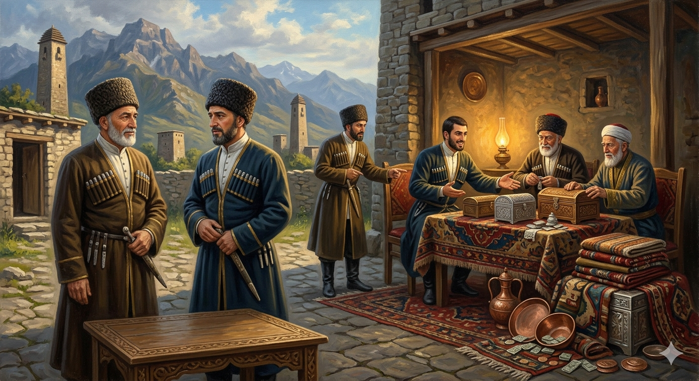

И.А. Дахкильгов. Хьехаме дувцарш - поучительные рассказы-притчи.
И.А. Дахкильгов. Хьехаме дувцарш - поучительные рассказы-притчи. Из ингушского фольклора.

Каста вовзаргва из
Къамаьл деш латташ хиннав ши къонах. ТӀехвоалаш хинна цхьа къонах царна юхе сецав, геттар чӀоагӀа эздел лаьцад, доагӀар-денар хаьттад, гӀулакха кийча ва ше аьннад. ГӀалгӀай доагӀаш мел дола эзди къамаьл даьд цо. Ший наькъагӀа дӀахо из дӀавахача, цхьанне аьннад: - Даьллахьи, ма хоза оамал йолаш, безам тӀабодаш дика саг ва из! Тахан мара сона вайна саг а ма вац! ДӀавахар дика вовзаш хиннав шоллагӀачоа. Цо аьннад: - Дика ва а аргда, во ва аргда, из миштав ха дукха ха йисаяц. Ломма из волча зоахалола нах болх. ЙоӀ дӀалургйолаш я, аьнна хезад сона. Зоахалол хинна даьлча, цо ший захалаш тӀера мел цӀока Ӏоозаергъя хайначул тӀехьагӀа из саг дика ва е во ва ха дукха ха йисаяц.
РУССКИЙ
Вскоре мы узнаем его
Стояли и беседовали двое друзей. Мимо проходил некий мужчина. Он подошел к беседующим и, как положено, стал расспрашивать их о житье-бытье и оказывать им всяческое внимание. Все это подкупило одного из друзей, и когда тот человек покинул их и пошел далее своей дорогою, сказал: "Очень приятно было с ним беседовать. Он вызывает к себе уважение и по всему видно, что он человек достойный". Второй друг знал этого прохожего несколько лучше, и он ответил: "Вскоре мы узнаем, хороший он или плохой человек. Послезавтра к нему придут сватать его дочь. Как мне известно, он даст согласие на брак. Когда договор между ним и сватами будет заключен и сколь много он затребует калыма за свою дочь, тогда мы и узнаем, каков он на самом деле".
ENGLISH
We'll find out who he is soon
Two friends were standing there chatting. A man happened to be passing by. He approached the two men and, as is customary, began to ask them about their lives and show them every consideration. All this won over one of the friends, and when the man left them and went on his way, he said: "It was a great pleasure to talk to him. He commands respect, and it is clear from everything that he is a man of integrity." The second friend knew this passer-by somewhat better, and he replied: "We shall soon find out whether he is a good man or a bad one. The day after tomorrow, matchmakers will come to him to ask for his daughter's hand in marriage. As far as I know, he will agree to the marriage. Once the agreement between him and the matchmakers has been finalised, and we see how much he demands as a bride price for his daughter, then we shall find out what sort of man he really is."
НОХЧИЙН
Из дехка хуур ду вай
ХӀиттина, дийцаш ши доттагӀа. Некъа тӀехь цхьа стаг дуьйла. Иза уьш вагӀачохь чувахна, тхайн гӀиллакхаца, дахарх хатта, наха дика хеттар дан долайелла. Уьш, доттагӀаша, дезаделла и, тӀаккха, цигара, ша некъ тӀаьхьабоьду хана, доттагӀаша цхьаьннан аьлла: «ЧӀогӀа дика хилла соьца дийцарца ша. Из сий доккхуш ду, гуш дерриге а, стаг хилар». ШолгӀачу доттагӀчунна хиллачухула шордокх хиллара хӀара некъахо, жоп делла цо: «Массо хана вай хур ду, вон е дика ду и. КхолгӀа дийнахь цунна тӀе зевзий еана, шен йоӀ зуоахало деха. Хааш сона, из барт хургва кӀант цаӀала. Цунна а хӀокху зевзиша юккъе барт хилча, хӀун хазна цо шен йоӀана деха, циггахь вай хур ду, хӀун ду из бакъдолуш».
ПОГОВОРКИ
Аьл-дитташка ладувгӀар – цомгар, уж ца дувцар – молха. Слушать сплетни – болезнь, не сплетничать – лекарство. Listening to gossip is a sickness; not gossiping is the cure. Эл-дитташка ладугӀар - цамгар, уьш ца дийцар - молха.Бордз ца кхийттача, хьаж-цӀа а яха, енай газа. Коза, не встретившая волка, совершила паломничество (дошла до Мекки) и вернулась. The goat that never crossed paths with the wolf made a full pilgrimage to Mecca and returned. Барзах ца кхеттача, хьаьж-цIа а йахна, йеъна газа.Бус Ӏовужаш ца хезар Ӏуйранна хоз. Того, что не слышал, ложась спать, услышишь, проснувшись. What you didn't hear before going to sleep, you'll hear when you wake. Буьйсана дӀавуьжуш ца хезнарг Ӏуьйранна хеза.БӀарг мел боккха бале а кӀай гу. Как бы глаз не был велик, а бельмо на нем все равно видно. No matter how large the eye, a cataract still shows on it. БӀаьрг мел боккха балахь а, кӀай го.Во хила атта да, дика ва алийта хала да. Легко быть плохим, трудно быть хорошим. It's easy to be bad; it's hard to be called good. Вон хила атта ду, дика ву алийта хала ду.Довхой дукха хургба хьа, наьха гӀалаташ Ӏа дувце. Наживешь много врагов, если будешь распространяться о чужих недостатках. You'll gain many enemies if you keep talking about others' faults. Довхой дукха хир бу хьан, нехан гӀалаташ ахь дийцахь.Къонахчоа товш дац хабараши йоахараши. Мужчине не приличествует болтать и сплетничать. Idle chatter and gossip do not befit a true man. Къонахчун товш дац хабарший бохуршший.Маьхах ца ийцар хозача къамаьлаца ийцад. Не приобретенное за плату приобрели сладкими речами. What could not be won with payment was won with pleasant words. Мехах ца эцнарг хазачу къамелаца эцна.Оапаш бувца саг коа вита мегаргвац. Лжеца нельзя даже во двор пускать. A liar should not even be let into the yard. Аьшпаш буьйцу стаг кевна вита мегар дац.Саго ше лелача дар мара Ӏомаде йиш яц. Человек может знать лишь то, что он видит и слышит там, где он бывает. A person can only learn what they themselves have witnessed. Стага ша лелачехь дерг бен Ӏамо йиш йац.Хоза лер дика дале а, баге кхабар кхы а дикагӀа да. Речистым быть хорошо, но молчаливым быть лучше. It's good to speak well, but even better to know when to keep quiet. Хаза лер дика далахь а, бага кхабар кхин а диках ду.Хоза мотт бола саг наха дукха веза. Люди любят красноречивого человека. People love an eloquent speaker. Хаза мотт болу стаг нахана дукха веза.Чудисар – дошув, арадаьннар – дотув. Несказанное – золото, сказанное – серебро. What is kept unsaid is gold; what is spoken is silver. Чудиснарг - деши, арадаьлларг - дети.